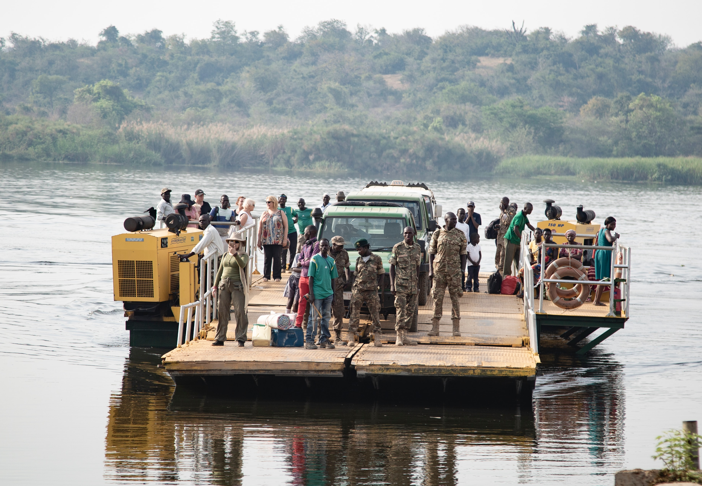

Egipto 🇪🇬
¡Aprende datos generales e importantes acerca de Egipto en éste artículo!Puntos clave:

Ubicación
Egipto se encuentra en la esquina noreste del continente africano, y es la conexión entre el norte de África y el Medio Oriente. Limita con el mar Mediterráneo, con Palestina e Israel al noreste, el Golfo de Aqaba y el Mar Rojo al este, Sudán al sur y Libia al oeste.
Clima
Egipto tiene un clima cálido y seco, y la mayor parte de su tierra consiste en tierras desérticas. Los desiertos del país pueden pasar de temperaturas extremadamente altas a bajas en el transcurso de un día. El verano en Egipto es generalmente extremadamente caluroso y seco, alcanzando hasta 49 ° C. A lo largo de la costa norte del país, sin embargo, el clima es fresco, ventoso y húmedo con lluvias ocasionales durante el invierno.

Importancia del río Nilo
El río Nilo fluye más de 6600 kilómetros y es el segundo río más largo del mundo. Durante miles de años, ha proporcionado a los egipcios una fuente de tierras fértiles y riego, en contraste con el territorio seco del país. Hasta ahora, el Nilo es una importante fuente de riego, energía y transporte. El río Nilo era de vital importancia para el desarrollo del antiguo Egipto. Su agua es rica en nutrientes al igual que su ribera debido a sus grandes depósitos de limo. Debido a esto, la mayoría de los alimentos de Egipto se cultivan en la región del delta del Nilo. Los antiguos egipcios desarrollaron métodos de riego para aprovechar las ventajas que ofrecía el río, cultivando recursos como trigo, algodón y frijoles para mantener a su población.
Sistema social y político
El idioma oficial de Egipto es el árabe, y tiene el Islam y el cristianismo como sus principales religiones.
Está gobernado por un gobierno republicano, lo que significa que su autoridad política proviene de su pueblo, que elige a un presidente como su representante. Su actual presidente es el jefe del ejército Abdel Fattah al-Sisi, quien fue nombrado en mayo de 2014 después del golpe de estado para abolir al ex presidente Mohamed Morsi.